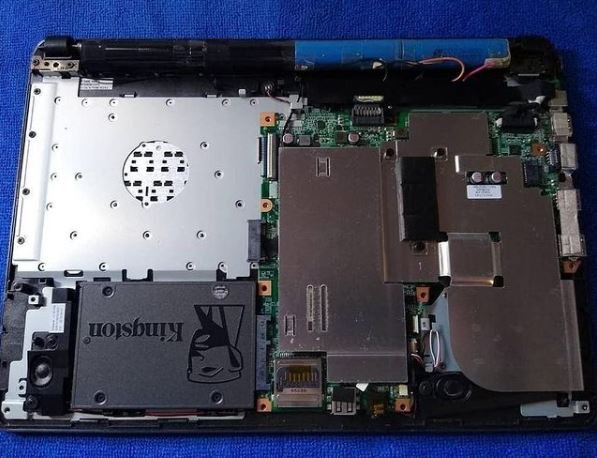
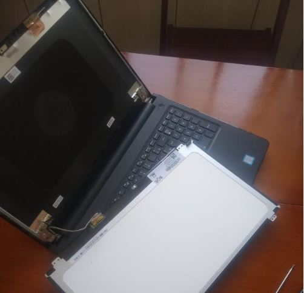
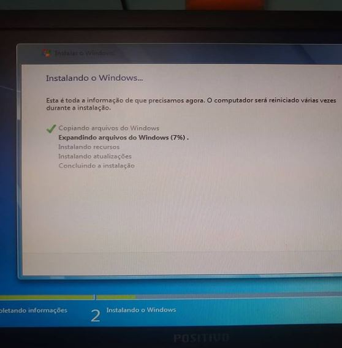

Alguns Serviços

Upgrade em notebook, substituição de HD por um SSD.
Um SSD consiste em uma memória sólida. Sua latência de leitura (tempo para encontrar uma informação) é baixa, sua taxa de leitura e escrita é por volta de 500 Mb/s, 5 vezes mais rápido que o HD
Manutenção no cooler
Problema: Desktop reiniciando sozinho por conta da temperatura,
fan do cooler não trabalha.❌
Solução: lubrificação do eixo do cooler com graxa.✔️
Mas 1 concluído
Substituição de display e tela de Notebook
Um dos problemas mais comuns que podem acontecer com seu notebook é a tela quebrar, trincar, apresentar algum defeito ou simplesmente parar de funcionar. São corriqueiros os casos em que alguém fecha o notebook com algum objeto sobre o teclado, e quando percebe já é tarde demais… Ou então, por causa de algum descuido durante o transporte do note, a tela acaba sendo danificada.
Upgrade em desktop
Mais 2GB de memória RAM adicionado e instalação do Windows 7
Conserto de cabo de rede.
Ao crimpar o RJ45 no cabo de rede de forma errada, pode trazer malefícios a sua internet como: lentidão, quedas e oscilação.
- Tipo A (T568A): branco/verde, verde, branco/laranja, azul, branco/azul, laranja, branco/marrom, marrom.
- Tipo B (T568B): branco/laranja, laranja, branco/verde, azul, branco/azul, verde, branco/marrrom, marrom.